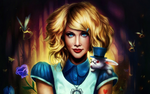

 Voilà la surprise !!! Je vais raconter ma vie :) J'avais déjà eu l'idée de ce site quand j'avais commencé à apprendre le codage tout seul, mais par manque de temps et de motivation, je n'avais pas continué. J'ai fait beaucoup de choses et eu beaucoup d'expériences mais pas forcémenent en accord avec mes rêves. Depuis que j'ai eu une game boy avec DR Mario à 3 ans j'ai su ce que je voudrais faire toute ma vie. Jouer. Jeux vidéos, Magic, Echecs, Poker, Basket, j'ai passé ma vie à jouer et j'adore ça ! Les jeux sont pour moi similaires à la vie. Pour les réussir, et y prendre plaisir, il faut de la patience, de la reflexion, de l'envie, des proches... Les jeux permettent aux Hommes de se dépasser, physiquement, intellectuellement, et de se raprocher. Mais comme pour n'importe quel divertissement il faut jouer avec modération sous peine de se retrouver piégé dans un monde onirique qui peut devenir cauchemardesque.. Mais quitte à aimer ça, et devoir travailler, j'ai toujours voulu en faire un métier mais malheureusement plus jeune on m'a mis beaucoup de barrières, puis je m'en suis mis tout seul, maintenant il n'y en a plus. A force de perséverance on arrive toujours à notre destination. Avant le game over. Car tout comme dans la vie tout les jeux ont une fin alors il faut prendre un maximum de plaisir quand on a la chance de pouvoir jouer. Press start!
{kind=link}